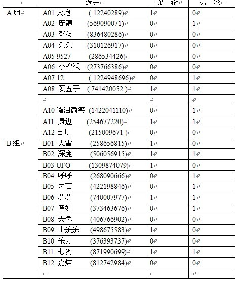
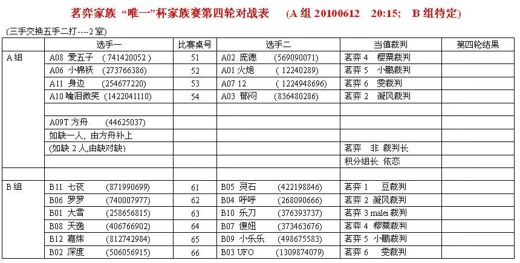
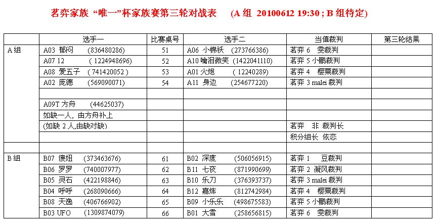

茗弈6月唯一杯五子棋内部赛
首页
茗弈阁
#11 Re:Re:茗弈6月唯一杯五子棋内部赛 作者：茗弈宽容 发表时间：2010-6-8 12:42:26

第一次成绩
#12 Re:Re:茗弈6月唯一杯五子棋内部赛 作者：茗弈总监 发表时间：2010-6-9 13:31:58

#13 Re:Re:Re:茗弈6月唯一杯五子棋内部赛 作者：茗弈总监 发表时间：2010-6-9 13:33:10
［ 茗弈小刀 于 2010-6-12 16:40:33 时奖励此帖[金币加 20 威望加1］
#14 Re:茗弈6月唯一杯五子棋内部赛 作者：茗弈小刀 发表时间：2010-6-12 16:40:15
由于几个娃娃要参加全锦，B组的比赛延后。这周就A组比吧。
#15 Re:茗弈6月唯一杯五子棋内部赛 作者：茗弈宽容 发表时间：2010-7-4 12:58:28
2010茗弈“唯一杯”比赛最终名次：
A组第一身边，第二火炮，第三我爱五子棋.
B组第一七夜，第二深度，第三天之灵石。
#16 Re:茗弈6月唯一杯五子棋内部赛 作者：弱惜 发表时间：2010-7-4 15:03:08
祝贺获得优异成绩的选手，家族这么多高手，真高兴！裁判等为比赛服务的朋友，你们也辛苦了。
#17 Re:茗弈6月唯一杯五子棋内部赛 作者：茗弈宽容 发表时间：2010-7-4 20:37:04
七夜，深度，裁判小鹏，male,雯的蓝钻节约给家族，谢谢！
［此帖子已被 茗弈宽容 在 2010-7-4 20:53:38 编辑过］
#18 Re:茗弈6月唯一杯五子棋内部赛 作者：茗弈宽容 发表时间：2010-7-4 20:38:17
最后代表家族再次感谢赞助这次比赛的茗弈唯一！
#19 Re:茗弈6月唯一杯五子棋内部赛 作者：庞德 发表时间：2010-7-7 12:27:42
 怎么后来还有比赛。。
怎么后来还有比赛。。